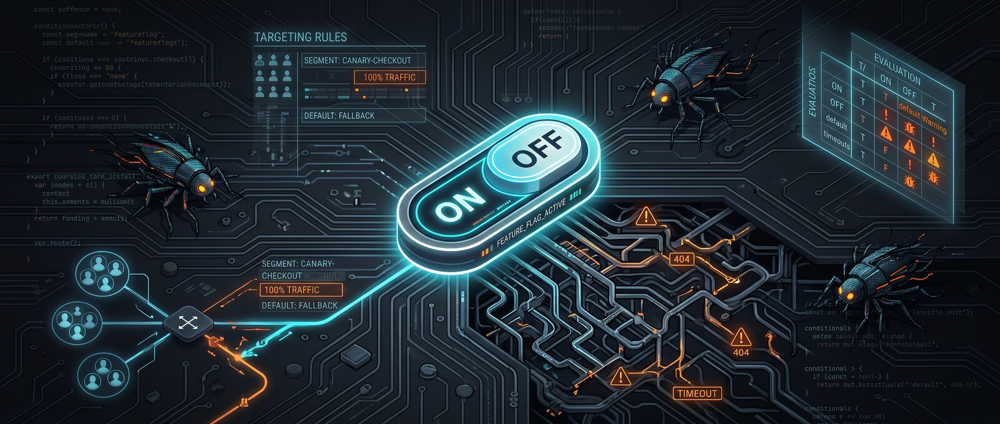

Testing Feature Flags: The Bugs That Hide Behind the Switch
Feature flag testing usually stops at on/off. The real bugs live in targeting rules, default values, and what happens when the flag service goes dark.
A feature flag is supposed to make releases safer: ship the code dark, turn it on for a slice of users, roll back with a toggle instead of a deploy. Most teams test exactly two states for a flag — on and off — and call it covered. The incidents that actually take systems down rarely come from either of those states. They come from the states nobody wrote a test for: a targeting rule that matches more users than intended, a flag evaluation that silently falls back to the wrong default, or a flag that flips in the middle of a request that's already halfway through.

Why "on and off" isn't the real test matrix
A flag's behavior depends on more than its boolean value. It depends on how that value gets decided, and what happens when the decision can't be made at all. A realistic test matrix for a single flag includes:
- the flag evaluates true for the targeted segment
- the flag evaluates false for everyone outside that segment
- the flag service times out or is unreachable, and the SDK falls back to a local default or cached value
- the flag changes between two calls in the same request or session
- the flag interacts with a second flag that's also active for the same user
That last row is the one teams underestimate. Two flags, each tested in isolation, can combine into a state nobody exercised. Three active flags on a checkout page already gives eight possible combinations; five flags gives thirty-two. Nobody writes thirty-two test cases for that, which is why staged rollouts need monitoring, not just pre-release testing — but pre-release testing should still cover the combinations most likely to ship together.
A concrete example: a canary that wasn't
Imagine a team rolling out a new checkout flow behind a flag called new-checkout-flow, targeted at 5% of users through a segment rule in their flag provider's dashboard (or, increasingly, defined as code and pushed through Terraform or a similar tool). The rule reads "match users in segment canary-checkout." A later change to that configuration — reviewed as a routine infrastructure diff, not as a release — replaces the segment match with a rule that matches all users. CI checks that the configuration is syntactically valid Terraform; nothing checks that a canary flag still targets a canary-sized audience. The new checkout flow, still mid-development, goes to 100% of traffic instead of 5%. A published postmortem describing almost exactly this failure mode (a mistyped targeting rule turning a 5% canary into a 100% rollout, after flag management moved from a UI to infrastructure-as-code) is linked in the sources below — treat the specific numbers in it as illustrative, since the account isn't independently verified, but the failure shape is a known and recurring one.
The fix in that kind of scenario isn't "write more flag tests" in the abstract. It's specific: a semantic check in CI that rejects a targeting rule change which widens a canary flag beyond an agreed ceiling, and a review step for flag configuration changes that treats them with the same scrutiny as a code deploy — because they are a deploy.
Testing the failure path, not just the happy path
The other case worth testing deliberately is what a client does when it cannot reach the flag evaluation service at all. Every flag SDK has a fallback behavior — a cached last-known value, a hardcoded default, or a specific "offline" value — and that fallback is part of your application's behavior whether or not you've tested it. A real incident on Statsig's status page in mid-2026 showed why this matters: a backend change caused feature gates to evaluate to false instead of their intended default for a window of several hours, affecting customers on a specific API version across multiple regions. Anyone whose "safe" default for a given flag happened to be true — a kill switch inverted, or a flag meant to enable a safety check — got the opposite of the behavior they expected, silently, for hours.
A minimal test for this looks like:
test('checkout falls back safely when flag service is unreachable', async () => {
const flagClient = mockFlagClient({ throwOnEvaluate: true });
const result = await getCheckoutFlowVariant(flagClient, { userId: 'u123' });
// Assert the SAFE default, not just "no crash"
expect(result).toBe('legacy-checkout');
});The assertion that matters isn't "the app didn't crash" — it's that the fallback value is the safe one for that specific flag, which is a judgment call your test should encode explicitly rather than leave implicit in SDK defaults.
Pitfalls and limits
Flag testing has real limits worth naming. Combinatorial coverage doesn't scale — you cannot and should not try to test every combination of every active flag; pick the combinations that are actually live together in production and test those. Mocking the flag client in unit tests is necessary for speed, but a suite that only ever mocks the client will never catch an evaluation-service outage, a network timeout, or a malformed response — that needs at least a handful of integration or chaos-style tests that hit a real (staging) flag service or a deliberately broken one. And stale flags are a testing liability, not just tech debt: a flag left in the codebase six months after full rollout is a code path nobody is testing anymore, because nobody remembers it's still conditional.
What to do next
- Add at least one test per flag for the "evaluation failed" path, and make the assertion check the specific safe value for that flag, not just the absence of a crash.
- If flag targeting is defined as code (Terraform, YAML, a config repo), add a CI check that catches semantic widening of a canary rule, and require the same review for that change as for a production deploy.
- Pick the two or three flags most likely to be active together in production and add explicit combination tests for those, instead of trying to cover every permutation.
- Set an expiry on every new flag at creation time, and track flags past that date as a backlog item — an untested flag combination is often just a flag nobody removed.
Sources
- Postmortem: How a LaunchDarkly Targeting Misconfiguration Served Unfinished Features to 100% of Users — DEV Community, account of a canary-targeting misconfiguration; treat specific figures as illustrative.
- Statsig Status: Feature Flag Evaluation Errors — incident report describing feature gates evaluating to the wrong default for several hours in mid-2026.
Feature flag bi trebalo da izdanja učini bezbjednijim: kod se isporuči „u mraku", uključi se za dio korisnika, a vraćanje unazad radi se prekidačem umjesto novim deployem. Većina timova testira tačno dva stanja flaga — uključeno i isključeno — i smatra da je to pokriveno. Incidenti koji zaista obore sisteme rijetko dolaze iz bilo kog od ta dva stanja. Dolaze iz stanja za koja niko nije napisao test: pravilo targetiranja koje obuhvata više korisnika nego što je planirano, evaluacija flaga koja tiho padne na pogrešnu podrazumijevanu vrijednost, ili flag koji se promijeni usred zahtjeva koji je već na pola puta.
Zašto „uključeno i isključeno" nije prava test matrica
Ponašanje flaga ne zavisi samo od njegove boolean vrijednosti. Zavisi od toga kako se ta vrijednost određuje i šta se dešava kada odluka uopšte ne može da se donese. Realna test matrica za jedan flag obuhvata:
- flag se evaluira kao true za ciljani segment
- flag se evaluira kao false za sve van tog segmenta
- flag servis istekne (timeout) ili je nedostupan, pa SDK padne na lokalnu podrazumijevanu ili keširanu vrijednost
- flag se promijeni između dva poziva u okviru istog zahtjeva ili sesije
- flag stupa u interakciju sa drugim flagom koji je takođe aktivan za istog korisnika
Taj posljednji red timovi najčešće potcjenjuju. Dva flaga, svaki testiran izolovano, mogu da se kombinuju u stanje koje niko nije isprobao. Tri aktivna flaga na checkout stranici već daju osam mogućih kombinacija; pet flagova daje trideset dvije. Niko ne piše trideset dva test slučaja za to, i zato postepena puštanja (staged rollouts) zahtijevaju monitoring, a ne samo testiranje prije izdanja — ali testiranje prije izdanja i dalje treba da pokrije kombinacije za koje je najvjerovatnije da će zajedno otići u produkciju.
Konkretan primjer: canary koji to nije bio
Zamislite tim koji pušta novi checkout tok iza flaga new-checkout-flow, targetiranog na 5% korisnika kroz pravilo segmenta u dashboardu flag providera (ili, sve češće, definisanog kao kod i poslatog kroz Terraform ili sličan alat). Pravilo glasi „obuhvati korisnike u segmentu canary-checkout". Kasnija izmjena te konfiguracije — pregledana kao rutinski infrastrukturni diff, a ne kao izdanje — zamjenjuje poklapanje segmenta pravilom koje obuhvata sve korisnike. CI provjerava da je konfiguracija sintaksno ispravan Terraform; ništa ne provjerava da canary flag i dalje cilja publiku veličine canaryja. Novi checkout tok, još uvijek u razvoju, odlazi na 100% saobraćaja umjesto na 5%. Objavljeni postmortem koji opisuje gotovo tačno ovakav otkaz (pogrešno upisano pravilo targetiranja koje je 5% canary pretvorilo u 100% rollout, nakon što je upravljanje flagovima prešlo sa UI-ja na infrastructure-as-code) nalazi se u izvorima ispod — konkretne brojke u njemu uzmite kao ilustrativne, jer izvještaj nije nezavisno potvrđen, ali sam oblik otkaza je poznat i ponavlja se.
Rješenje u ovakvom scenariju nije apstraktno „napišite više testova za flagove". Ono je konkretno: semantička provjera u CI-ju koja odbija izmjenu pravila targetiranja kojom se canary flag proširuje preko dogovorene granice, i korak pregleda za izmjene konfiguracije flagova koji ih tretira sa istom pažnjom kao deploy koda — jer one jesu deploy.
Testirajte putanju otkaza, ne samo srećnu putanju
Drugi slučaj koji vrijedi namjerno testirati je šta klijent radi kada uopšte ne može da dođe do servisa za evaluaciju flagova. Svaki flag SDK ima fallback ponašanje — keširanu posljednju poznatu vrijednost, hardkodovanu podrazumijevanu vrijednost ili posebnu „offline" vrijednost — i taj fallback je dio ponašanja vaše aplikacije bez obzira na to da li ste ga testirali. Stvarni incident na Statsigovoj status stranici sredinom 2026. pokazao je zašto je to bitno: izmjena na backendu dovela je do toga da se feature gateovi nekoliko sati evaluiraju kao false umjesto kao njihova predviđena podrazumijevana vrijednost, što je pogodilo korisnike na određenoj verziji API-ja u više regiona. Svako čija je „bezbjedna" podrazumijevana vrijednost za neki flag bila true — obrnuti kill switch ili flag koji uključuje sigurnosnu provjeru — dobio je suprotno ponašanje od očekivanog, tiho, satima.
Minimalan test za ovo izgleda ovako:
test('checkout falls back safely when flag service is unreachable', async () => {
const flagClient = mockFlagClient({ throwOnEvaluate: true });
const result = await getCheckoutFlowVariant(flagClient, { userId: 'u123' });
// Assert the SAFE default, not just "no crash"
expect(result).toBe('legacy-checkout');
});Asercija koja je bitna nije „aplikacija se nije srušila" — već da je fallback vrijednost upravo ona bezbjedna za taj konkretni flag, što je procjena koju vaš test treba eksplicitno da kodira, umjesto da je ostavi implicitnom u podrazumijevanim vrijednostima SDK-a.
Zamke i ograničenja
Testiranje flagova ima stvarna ograničenja koja vrijedi imenovati. Kombinatorna pokrivenost se ne skalira — ne možete i ne treba da pokušavate da testirate svaku kombinaciju svakog aktivnog flaga; izaberite kombinacije koje su zaista zajedno aktivne u produkciji i testirajte njih. Mockovanje flag klijenta u unit testovima neophodno je zbog brzine, ali suite koji uvijek samo mockuje klijenta nikada neće uhvatiti pad servisa za evaluaciju, mrežni timeout ili neispravan odgovor — za to je potrebno bar nekoliko integracionih ili chaos testova koji gađaju stvarni (staging) flag servis ili namjerno pokvaren. A zastarjeli flagovi su teret za testiranje, ne samo tehnički dug: flag koji ostane u kodu šest mjeseci nakon punog rollouta je putanja koda koju više niko ne testira, jer se niko ne sjeća da je i dalje uslovna.
Šta dalje
- Dodajte bar jedan test po flagu za putanju „evaluacija nije uspjela", i neka asercija provjerava konkretnu bezbjednu vrijednost za taj flag, a ne samo izostanak pada.
- Ako je targetiranje flagova definisano kao kod (Terraform, YAML, config repo), dodajte CI provjeru koja hvata semantičko proširenje canary pravila, i za tu izmjenu zahtijevajte isti pregled kao za produkcioni deploy.
- Izaberite dva ili tri flaga za koje je najvjerovatnije da će zajedno biti aktivni u produkciji i dodajte eksplicitne testove kombinacija za njih, umjesto da pokušavate da pokrijete svaku permutaciju.
- Svakom novom flagu postavite datum isteka pri kreiranju, i flagove kojima je taj datum prošao pratite kao stavku u backlogu — netestirana kombinacija flagova često je samo flag koji niko nije uklonio.
Izvori
- Postmortem: How a LaunchDarkly Targeting Misconfiguration Served Unfinished Features to 100% of Users — DEV Community, opis pogrešne konfiguracije canary targetiranja; konkretne brojke uzmite kao ilustrativne.
- Statsig Status: Feature Flag Evaluation Errors — izvještaj o incidentu u kojem su se feature gateovi nekoliko sati sredinom 2026. evaluirali na pogrešnu podrazumijevanu vrijednost.